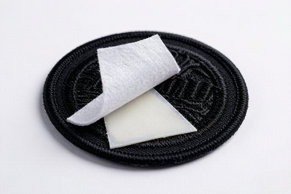

Adhesive Patches: The Peel-and-Stick Solution for Temporary Branding
Adhesive patches trade permanence for convenience. This guide covers how peel-and-stick backing works, the adhesive grades that decide how long a patch stays put, step-by-step application, and the temporary-branding jobs where stick-on patches are the smartest buy.

Not every patch needs to outlive the garment. Sometimes you just want a logo on a tote bag for a three-day trade show, or a brand sticker on a water bottle for a giveaway table — and for that, an adhesive patch is exactly the right tool. Peel the liner, press it down, done. No needle, no iron, no hook-and-loop panel.
That speed is the whole pitch, but it's also where people get it wrong. The word "adhesive" covers a surprising range of quality, and the difference between a patch that holds for a weekend and one that slides off by Tuesday afternoon comes down to the backing chemistry. Here's what actually matters when you order stick-on patches, and how to apply them so they stay put for as long as they're supposed to.
1. What Adhesive Patches Are (and What They're Not)
A stick-on patch is a standard embroidered, woven, or PVC patch with a pressure-sensitive adhesive (PSA) on the back instead of iron-on film, Velcro, or a plain sew-on twill. You remove the release liner and press the patch onto a clean, dry, flat surface. The adhesive grabs on contact and builds a bond over the next few hours.
It's the same category of adhesive you already trust on bumper stickers, name badges, and credit-card stickers — just engineered for fabric and hard goods instead of paper. That matters, because the surface you stick to changes everything:
- Hard, smooth surfaces — laptops, water bottles, phone cases, notebooks, packaging boxes — are where adhesive patches perform best. Lots of contact area, no fibers to fight against.
- Flat, tight-weave fabric — canvas, cotton twill, denim, nylon — works well if the patch has a high-grade PSA and you press firmly.
- Rough, stretchy, or coated fabric — fleece, knits, leather, waxed canvas — is where adhesive struggles. The bond is only as strong as the surface it's stuck to.
Quick Reality Check
Adhesive backing is a temporary or semi-permanent option, not a permanent one. It will not survive dozens of hot machine washes the way a sew-on patch will. Treat it as "sticks until you peel it off," not "sticks forever."
2. How to Apply a Peel-and-Stick Patch the Right Way
Application is simple, but the little details are what separate a patch that looks factory-applied from one that curls at the edges. Follow these steps in order.
Step 1 — Clean and dry the surface
Wipe the area with isopropyl alcohol or a mild cleaner and let it dry completely. Dust, oil, and moisture are the three enemies of adhesion. On fabric, give it a quick lint-roll so loose fibers don't weaken the bond.
Step 2 — Test the placement first
Hold the patch in position without removing the liner. Eyeball the alignment, especially if it's a logo that has to sit level. Once the adhesive touches down, repositioning gets messy and can stretch the glue film.
Step 3 — Peel the liner cleanly
Peel the release liner away in one slow, even motion, starting at a corner. Try not to touch the exposed adhesive — fingerprints deposit oil that deadens the bond in those spots.
Step 4 — Press, don't rub
Place the patch and press down firmly with even pressure for 20–30 seconds. Go edge to edge, paying special attention to the corners and the merrowed border, which are the first places to lift.
Step 5 — Let it cure
PSA reaches most of its strength within minutes but keeps building for up to 24 hours. Don't bend, wash, or load the item during that window. A quick overnight rest makes a measurable difference in how long the patch holds.
3. Adhesive Grades: What's Behind the Stick
Ask a supplier "is it sticky?" and you'll get a yes every time. The useful question is how sticky, and for what surface. Here's the breakdown that actually matters when you're ordering.

- Standard / economy PSA: Fine for flat paper goods, poly bags, and short-term indoor use. It's the cheapest option and behaves like it — expect days to weeks of hold, not months.
- General-purpose fabric PSA: The workhorse for tote bags, backpacks, and promo giveaways. Balanced tack and repositionability, holds well on cotton and canvas through normal handling.
- High-tack / permanent PSA: Engineered for hard surfaces like laptops and bottles, and for fabric that will see real wear. Once cured, it's genuinely hard to remove — which is the point, and also the caution.
- Removable / low-tack PSA: Peels away cleanly without leaving residue. Ideal for retail price tags, samples, and anything a customer is meant to remove later.
If you're not sure which grade your application needs, tell your supplier exactly what you're sticking to and how long it has to last. "Adhesive for a canvas tote, three-day event, indoor" gets a better result than just "sticky backing."
4. Adhesive vs. Sew-On vs. Iron-On vs. Velcro
Each backing owns a specific job, and picking wrong is the most expensive mistake you can make on a patch order. Here's the honest comparison.
The rule of thumb: if it has to survive washing and wear forever, sew it on. If it has to swap constantly, go Velcro. If it just needs to stick fast with zero tools and you don't care whether it comes off later, adhesive is your answer — and it's usually the cheapest per unit of the four.
5. Where Stick-On Patches Shine Brightest
Adhesive patches aren't the "weaker" option — they're the right option for a specific set of jobs. These are the ones we see over and over from customers.
- Trade shows and events: Hand out stick-on patches and attendees can brand their lanyard, badge, or bag in seconds. No sewing station, no iron, no friction.
- Promotional giveaways: A logo patch that customers can slap on a laptop or water bottle is a walking advertisement with near-zero application cost.
- Product labels and packaging: High-tack PSA patches double as premium, reusable brand seals on boxes, gift sets, and subscription shipments.
- Short-run or seasonal branding: When the logo will change next quarter, you don't want permanent stitching. Adhesive lets you refresh branding without reworking garments.
- Hard-goods decoration: Laptops, phone cases, tumblers, toolboxes, and notebooks all take adhesive patches beautifully because the surface is smooth and rigid.
Whatever the application, the patch design itself still follows the same rules as any other — legible text, strong contrast, and clean borders all matter just as much when the patch is stuck on as when it's sewn. Our color guide walks through matching thread to material so the patch reads well at a glance.
6. How Long They Last (and What Kills Them)
Under good conditions — clean surface, firm pressure, 24-hour cure — a high-tack adhesive patch on a hard surface can hold for months to a year or more. On fabric, expect a shorter, more variable life. The bond breaks down fastest under three conditions:
- Heat: A hot car dashboard or a dryer cycle softens the adhesive and it creeps or lifts.
- Moisture and washing: Repeated soaking works under the edges and eventually releases the bond. Hand-washing around the patch extends life; machine cycles cut it short.
- Flexing: Stretchy or frequently bent fabric peels the patch from the edges inward, which is why rigid surfaces hold so much longer.
If you need the convenience of adhesive and the durability of stitching, order a patch with both: the adhesive holds it in place instantly, and a few hand stitches around the border carry the load long-term. It's the same belt-and-suspenders trick we recommend for iron-on patches.
Frequently Asked Questions (FAQ)
Q1: Can adhesive patches be removed and reused?
Partially. A low-tack or removable adhesive peels off cleanly and can sometimes be re-stuck once or twice, but the bond gets weaker each time. High-tack permanent adhesives are essentially single-use — removing them usually leaves residue and damages the adhesive film. If you want to swap patches repeatedly, choose Velcro backing instead.
Q2: Do adhesive patches stay on fabric?
They hold on flat, tight-weave fabric like canvas and cotton twill, especially with a high-tack PSA. They struggle on fleece, knits, and coated fabrics. On fabric, treat them as temporary — for anything that needs to survive regular washing, sew-on or iron-on is the safer call.
Q3: Will the adhesive damage the surface when I remove it?
Most quality PSAs peel off hard surfaces cleanly, though you may need a little warm air or isopropyl alcohol for stubborn residue. On delicate or painted surfaces, test in an inconspicuous spot first. Removable/low-tack grades are designed specifically to leave nothing behind.
Q4: What's the difference between adhesive and iron-on backing?
Adhesive backing sticks by pressure alone — peel and press. Iron-on backing requires heat (an iron or heat press) to melt a glue film into the fabric. Adhesive is faster and works on hard goods that can't be ironed; iron-on generally bonds fabric more durably but fails on coated or heat-sensitive materials.
Q5: How many adhesive patches should I order for a giveaway?
There's no minimum order here, and adhesive patches are the most economical backing per unit. For a typical event, most customers order a few hundred to a few thousand, sized 2–3 inches, with a high-tack PSA suited to the item they're being stuck to. Send us the surface and the timeline, and we'll match the grade.
Need Stick-On Patches for Your Next Event or Giveaway?
Get factory-direct wholesale pricing, free digital proof in 12 hours, and no minimum quantity. Tell us what you're sticking to and we'll match the right adhesive.
Get Free Quote